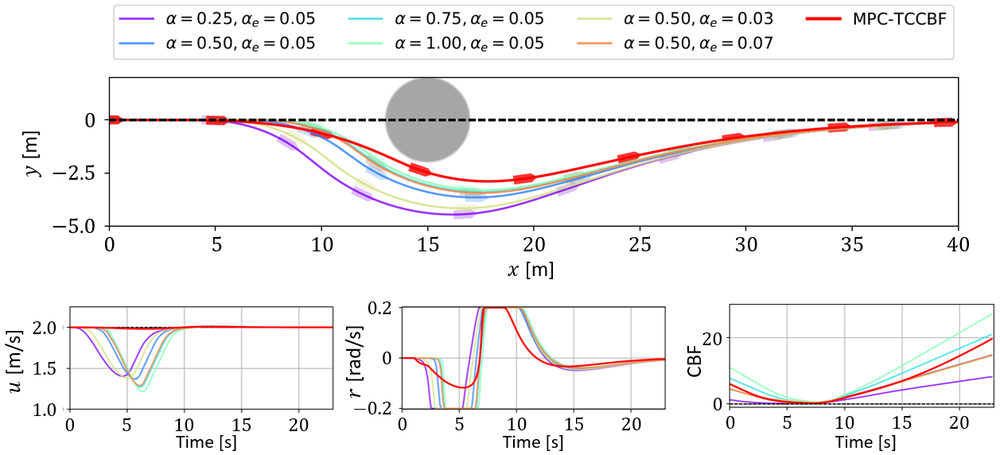
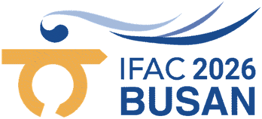

IFAC World Congress 2026 · Busan
MoC32 · JO-MECH: High-Performance Motion Control Systems
15:30 – 15:50 · Paper MoC32.1
Efficient COLREGs-Compliant Collision
Avoidance Using Turning Circle-Based
Control Barrier Function
Introduction · Control barrier function (CBF)
A CBF keeps the system inside a safe set
CBF
Safe set and CBF constraint
Pre-defined safe set\(h(\mathbf{x})\ge 0\)
CBF constraint
\(\dot h(\mathbf{x},\mathbf{u})+\gamma\,h(\mathbf{x})\ge 0\)
for some \(\mathbf{u}\in U\), with \(\gamma>0\): \(h\) may decrease, but never faster than the exponential bound \(\dot h=-\gamma h\), so it never crosses zero.
\(\dot h=-\gamma h\)
\(\dot h\ge-\gamma h\)
Always stays positive: safe
Collision avoidance
Distance-based CBF

The CBF limits the speed toward an obstacle in proportion to the relative distance from it: \(-\dot h(\mathbf{x})\le\gamma\,h(\mathbf{x})\)
Thank you
Questions & discussion
✉️ leeck@kongju.ac.kr
Changyu Lee · Kongju National University
Additional papers applying TC-CBF

Under review
Multimodal Trajectory Planning for Surface Vehicles using Turning Circle-based Control Barrier Function
Changyu Lee*
This talkChangyu Lee, Jinwook Park, Jinwhan Kim*, “Efficient COLREGs-Compliant Collision Avoidance using Turning Circle-based Control Barrier Function,” Mechatronics, 2026 · DOI · arXiv